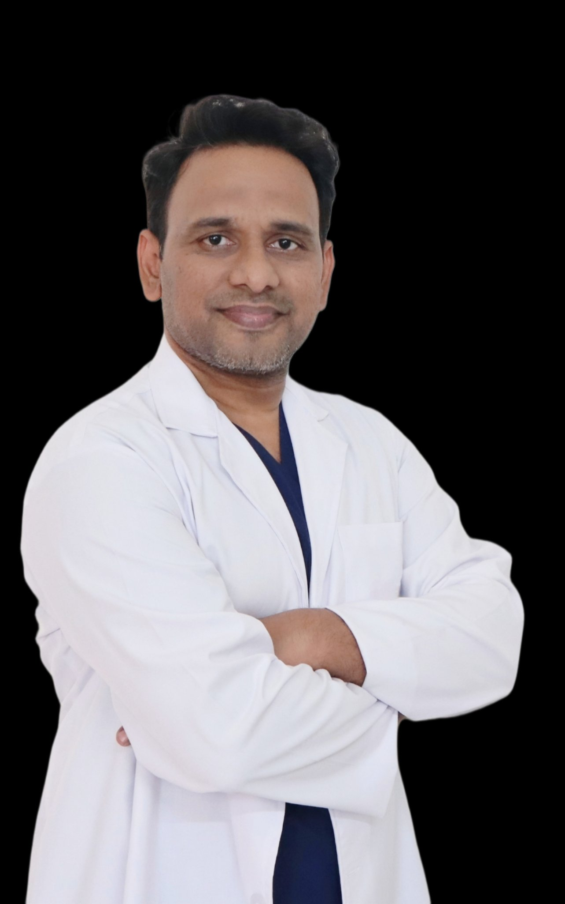

Aesthetic Surgery
Hair transplant, gynecomastia surgery, liposuction, rhinoplasty, breast surgery and tummy tuck — planned and performed by a qualified plastic surgeon.
Explore services →AR Plastic Surgery is Karimnagar's full-scope plastic surgery practice, led by Dr Ashok Reddy — MBBS, DNB (Mumbai), M.Ch (Delhi), Gold Medalist, Plastic, Cosmetic, Hand & Microvascular Surgeon.

From reconstructive surgery after trauma and burns to cosmetic procedures and non-surgical aesthetics — every treatment is planned by a qualified plastic surgeon.
Hair transplant, gynecomastia surgery, liposuction, rhinoplasty, breast surgery and tummy tuck — planned and performed by a qualified plastic surgeon.
Explore services →Burn reconstruction, cleft repair, scar revision, hand trauma, tendon & nerve repair and microsurgery — restoring form and function.
Explore services →Botox, dermal fillers, PRP, chemical peels and laser treatments — subtle, doctor-led rejuvenation without surgery.
Explore services →MBBS, DNB (Mumbai), M.Ch (Delhi), Gold Medalist
Plastic, Cosmetic, Hand & Microvascular Surgeon.
Patients visit us from across the region — including Jagtial, Warangal and nearby districts. Dedicated guides for our neighbouring towns:
Plastic surgery focuses on restoring form and function — treating burns, injuries, congenital conditions, hand and nerve damage, and scars. Cosmetic surgery focuses on refining and enhancing appearance, from rhinoplasty and hair transplantation to Botox and fillers. Both should be performed by a qualified plastic surgeon.
No. You can call us directly on +91 91826 56866 or use our online booking page to reserve a slot. Walk-in consultations are also welcome during clinic hours, subject to availability.
The clinic is in Karimnagar and regularly receives patients from Jagtial, Sircilla, Warangal, Siddipet, Peddapalli, Vemulawada and nearby districts across Telangana.
We are open every day — Monday to Sunday — from 10:00 AM to 8:00 PM.
Call +91 91826 56866 or book online through our booking page. Booking ahead helps us give your consultation unhurried time.
Yes. All consultations at AR Plastic Surgery are private, and your information is handled with strict confidentiality.
Every plan at AR Plastic Surgery starts with an honest consultation — what surgery can and cannot do, explained before anything is decided.